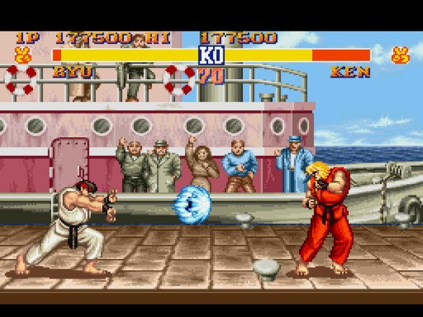

Les ordinateurs et consoles qui ont bercé notre jeunesse. Retour sur toute une époque.
Bon c’est pas le premier article du genre sur le wouebe, c’est du réchauffé même, mais chaque site d’info qui se respecte doit avoir son petit côté nostalgie.
Je vais vous parler de ces ordis qui ont bercé ma (et sûrement la vôtre) jeunesse et qui m’ont donné goût à l’info. Comme je les ai presque tous eu il va y avoir une bonne liste.
Une des première console de jeux: Atari 2600
ATARI 2600... des milliers d'heures passées dessus...
 Oui bon ça date mais je suis pas tout jeune, j’en ai eu même avant celà mais comme l’electricité n’existait pas encore je n’ose pas en parler… A mes yeux l’Atari 2600 reste la meilleure console, je ne parle pas de graphisme mais de poilade, j’étais très jeune aussi, j’ai essayé de rejouer à certains jeux ça a pris un coup de vieux. Mais ce qui faisait la magie de cette console c’est qu’à l’époque ça parraissait être un ovni, je vous rappelle qu’on est à la fin des années 70, pattes d’eph et disco à la télé, pas encore de montre à quartz, le concept des manettes etc tout ça n’avait jamais été vu avant (ou presque).
Oui bon ça date mais je suis pas tout jeune, j’en ai eu même avant celà mais comme l’electricité n’existait pas encore je n’ose pas en parler… A mes yeux l’Atari 2600 reste la meilleure console, je ne parle pas de graphisme mais de poilade, j’étais très jeune aussi, j’ai essayé de rejouer à certains jeux ça a pris un coup de vieux. Mais ce qui faisait la magie de cette console c’est qu’à l’époque ça parraissait être un ovni, je vous rappelle qu’on est à la fin des années 70, pattes d’eph et disco à la télé, pas encore de montre à quartz, le concept des manettes etc tout ça n’avait jamais été vu avant (ou presque).
En plus j’étais le seul à savoir la faire marcher, ben oui mes parents savaient pas comment la brancher, ils sont d’une autre époque. ça faisait de moi le “ptit génie de la maison“.
Quelques titres dont je me rappelle encore comme “jungle hunt, moon patrol, dig dug, Qberts, toutankamon…”
Le MO5, une machine bien de chez nous, Française, blanche…

Cocorico !
 Je m’en rappelle encore, c’était un soir de 1984, mon père m’emmene à RALLY ( une sorte de Carrefour) et il m’achète cet ordi au design sobre et beau (d’ailleur je trouve que le MacBook Air lui ressemble beaucoup au niveau des touches) . C’est là dessus que j’ai fais mes premiers programme en BASIC, j’aimais bien, c’était simple, je faisais des trucs de merde, c’était des images avec une musique en fond, mais je trouvais ça fantastique.
Je m’en rappelle encore, c’était un soir de 1984, mon père m’emmene à RALLY ( une sorte de Carrefour) et il m’achète cet ordi au design sobre et beau (d’ailleur je trouve que le MacBook Air lui ressemble beaucoup au niveau des touches) . C’est là dessus que j’ai fais mes premiers programme en BASIC, j’aimais bien, c’était simple, je faisais des trucs de merde, c’était des images avec une musique en fond, mais je trouvais ça fantastique.
Là encore des jeux m’on scotché comme Airbus, l’Aigle d’Or , le 5ème Axe. Des graphismes d’une horreur époustouflante mais des heures passés dessus, surtout l’aigle d’Or que je n’ai jamais fini je crois.
L’Amstrad CPC 6128

Le croisement entre concole et ordi
 Très vite le MO5 (et TO7) a laissé la place à l’Amstrad, des graphismes plus mieux, une bonne bibliothèque de jeux et surtout un coup marketing à l’époque fantastique, le grille-pain était vendu AVEC un écran. Ca peut avoir l’air con mais de cette sorte les parents ne voyaient plus leur télé monopolisée par le boutonneux de service, je suis persuadé que ça a énormément joué à l’époque.
Très vite le MO5 (et TO7) a laissé la place à l’Amstrad, des graphismes plus mieux, une bonne bibliothèque de jeux et surtout un coup marketing à l’époque fantastique, le grille-pain était vendu AVEC un écran. Ca peut avoir l’air con mais de cette sorte les parents ne voyaient plus leur télé monopolisée par le boutonneux de service, je suis persuadé que ça a énormément joué à l’époque.
Il a aussi à mon avis participé à l’introduction de la micro dans les foyers, en mélangeant console de jeux et ordinateur. Je n’ai pas beaucoup “développer” là dessus car les jeux étaient tellement bons que je faisais plus que ça… On se rappellera de Stram II, Barbarian (j’adorais trancher la tête…), green Beret, Commando, Zaxon, Turok, etc…
La Nes

Mario Bros - y a pas mieux
 Alors là il fallait le voir pour le croire, une petite boite toute carrée mais des super graphismes (pour l’époque), je me rappelle encore de la démo de Mario Bros, on avait économisé avec mon frère pour se la payer, elle coutait 990 Francs , c’était pas cher comparé aux ordis de l’époque mais là où Nintendo a bien joué c’est qu’il vendait les jeux dans les 300 / 400 Francs, ça faisait mal au cul…
Alors là il fallait le voir pour le croire, une petite boite toute carrée mais des super graphismes (pour l’époque), je me rappelle encore de la démo de Mario Bros, on avait économisé avec mon frère pour se la payer, elle coutait 990 Francs , c’était pas cher comparé aux ordis de l’époque mais là où Nintendo a bien joué c’est qu’il vendait les jeux dans les 300 / 400 Francs, ça faisait mal au cul…
Cette console est pour moi le symbole de la jouabilité, je n’ai depuis jamais retrouvé cette jouabilité sur des jeux, sa conccurente de l’époque, la Master system de Sega était une vrai daube en terme de maniabilité, il y avait bien sur les pros et les contres comme Xbox et Sony de nos jours :).
La Nes a également introduit le concept de sauvegarde, je me rappelle qu’il y avait une pile dans les cartouches de Zelda. On pouvait sauvegarder notre partie, aller se coucher et le lendemain, ho miracle on peut reprendre là où on avait fini…
Quelques jeux mémorables mais la liste est longue Les goonies, Metroid, Zelda, Mario Bros, Gradius, Punch Out, etc.
ATARI ST 520 STE
C'est parti pour un Dungeon Master!
 Il y a eu le 520 Stf, Ste, Le 1040, etc… L’atari ST a vraiment marqué un tournant je trouve, grace au…piratage :) En effet on arrivait à l’école avec nos paquets de disquettes ultra fines (maintenant ça ferait rire) qu’on s’echangeait, c’était on ne peu plus simple de copier les jeux à l’époque grace à un logiciel (en allemand d’ailleurs) qui demandait d’insérer la disquette source puis la disquette destination et c’est tout !
Il y a eu le 520 Stf, Ste, Le 1040, etc… L’atari ST a vraiment marqué un tournant je trouve, grace au…piratage :) En effet on arrivait à l’école avec nos paquets de disquettes ultra fines (maintenant ça ferait rire) qu’on s’echangeait, c’était on ne peu plus simple de copier les jeux à l’époque grace à un logiciel (en allemand d’ailleurs) qui demandait d’insérer la disquette source puis la disquette destination et c’est tout !
C’était une bête de course dans tous les domaines, graphismes et audio, il sera d’ailleurs beaucoup utilisé en MAO , Cubase lui doit beaucoup car c’était un des logiciels de musique les plus piraté sur Atari St, certaines légendes racontes que Cubase lui-même avait fait en sorte que le logiciel soit facilement piraté pour pouvoir diffuser sont utilisation en masse… Il avait cependant un ennemi féroce l’Amiga qui était beaucoup plus puissant (et plus chèr aussi) où d’ailleurs j’ai vu de très belles démos .
On se rappellera des jeux comme Rick dangerous, Stunt car Racer, Maupiti Island, Opération Steal, Dungeon Master, etc..
La super Nes

Are you ken ?
Très attendue a l’époque, c’était la première fois où l’on voyait le phénomène d’attente pour la sortie d’un produit, au JT passait des images de Japonnais attendant devant le magasin pour être servis les premiers, maintenant ce genre de folie s’est étendu à la terre entière et pour n’importe qu’elle saloperie un peu high tek. La super Nes a rajouté un peu de jeune dans les consoles avec l’arrivé de la 3D (donkey kong ) et les effets sonores (reverb, etc). J’ai passé pas mal de temps sur cette console mais la magie des jeux commencait déjà à me quitter, c’est une des dernières consoles auquelle j’ai passé beaucoup de temps.
La liste des jeux est là encore impressionante, j’ai surtout aimé la série des Marios ainsi que Street fighter.
La MegaDrive de Sega:

Des graphismes superbes et une maniabilité de me...
 Annoncée comme le messie avec ses 16 Bits la Megadrive était la conccurente de la SNES, la jouabilité était vraiment minable je trouve mais les graphismes bien mieux que la SNES, je trouve que ça a toujours été le problème de SEGA de faire des jeux beaux mais dont la maniabilité était médiocre, les personnages avaient un baton dans le cul…
Annoncée comme le messie avec ses 16 Bits la Megadrive était la conccurente de la SNES, la jouabilité était vraiment minable je trouve mais les graphismes bien mieux que la SNES, je trouve que ça a toujours été le problème de SEGA de faire des jeux beaux mais dont la maniabilité était médiocre, les personnages avaient un baton dans le cul…
Il y a eu de très très bons jeux dessus comme Altered Beast, Sonic the EdgeHog, E-Swat, Shinobi, Golden Axe, Afterburner, etc. Cette console avait un peu de magie car on y retrouvait les jeux d’arcade qui étant de SEGA se trouvaient portés sur cette console, du coup on se croyait comme dans les salles de jeux, j’avais même pensé à me construire une borne d’arcade à lépoque pour l’occasion.
J’ai une pensée particulière pou Ecco the dolphin qui bien qu’étant pas vraiment interressant était d’un graphisme époustouflant et avait une musique appaisante, On pouvait y jouer des heures juste à déplacer son dauphin…
Dans un aéroport il y a un an ou deux j’ai trouvé une console portable reprennant les plus grands titres de la Mégadrive, j’ai passé des heures aux chiottes avec !
Le Personal Computer

Un IBM des années 90 8 Mhz !
 Les années 90 ont marquées un tournant pour l’informatique, les PC se sont imposés en masse, je n’en voit pas trop la raison en fait, ils étaient gros, lourds, moches, pas puissants, chers (4000 Francs la barette de 1 mo de mémoire, 1200 francs le lecteur CD, etc.) . Et essayez de déconnecter votre ordi d’internet et vous allez voir si vous faites encore quelque chose avec votre grille-pain…
Les années 90 ont marquées un tournant pour l’informatique, les PC se sont imposés en masse, je n’en voit pas trop la raison en fait, ils étaient gros, lourds, moches, pas puissants, chers (4000 Francs la barette de 1 mo de mémoire, 1200 francs le lecteur CD, etc.) . Et essayez de déconnecter votre ordi d’internet et vous allez voir si vous faites encore quelque chose avec votre grille-pain…
Possible que ce soit le côté bidouille mais chez moi personne à part moi voulait y toucher. Mon premier PC était un 386 Sx 16 Mhz avec un disque dur de 20 Mo et un lecteur de disquette de 5″, même la plus petite des calculettes de nos jours lui met la misère.
Et puis petit à petit la puissance a commencée à arrivée nottement avec les célèbres 486 DX 2 66 et on a commencé à voir arriver des jeux comme Duke nukem, Day of tentacules, Sam et Max ;) mais aussi des superbes démos comme Second Reality, regardez moi tous ces geeks :)
La Playstation

Le début de la fin, chargements inter Minables...
 La playstation a été pour moi le début de la fin. Quelle erreur avait fait Sony là, un lecteur CD !!!! Alors certes on avait des supers intro animés mais bordel une heure de chargement entre chaque étapes, malgrès le fait qu’il y avait de très bon jeux dessus cette console m’a dégoûté des…consoles , je me suis donc tourné vers les PC pour laisser petit à petit les jeux de côté. D’autant qu’internet venait d’arriver timidement en France avec Compuserve et ses notes de téléphones à 2000 Francs :)
La playstation a été pour moi le début de la fin. Quelle erreur avait fait Sony là, un lecteur CD !!!! Alors certes on avait des supers intro animés mais bordel une heure de chargement entre chaque étapes, malgrès le fait qu’il y avait de très bon jeux dessus cette console m’a dégoûté des…consoles , je me suis donc tourné vers les PC pour laisser petit à petit les jeux de côté. D’autant qu’internet venait d’arriver timidement en France avec Compuserve et ses notes de téléphones à 2000 Francs :)
Petite anecdote à l’époque je faisais des puces pour pouvoir jouer aux jeux copiés sur la console, ça a du faire sa rennomée ça aussi, quand les graveurs de CD sont arrivés il était facile de copier les jeux lorsqu’on avait une puce d’installé, je m’étais alors improvisé monteur de puces sur console, un bon business à l’époque, je vendais les puces et mon pote les jeux copiés qu’il louait au vidéo-club, je programmais des PIC 1504 et les soudaient à même la console, ça payait les sorties…
Voilà, j’espère que ça aura reveillé quelques souvenirs à certains d’entre vous. Je ne parle pas de l’excellente Nintendo 64 qui pour certains est la meilleure console de tous les temps avec son golden eye car je ne l’ai pas eu, j’avais déjà lâché les consoles à cette époque. Il y a également la Megadrive, la Dreamcast, etc.. J’ai zappé également les consoles portables comme la Gameboy ou la GBA.
Les derniers consoles depuis la PS2 (déjà 10 ans) ne valent pas grand chose à mes yeux, ce ne sont que des monstres de puissance avec des jeux fades, j’ai acheté une xbox 360 et une PS3 que j’ai gardé respectivement 1 semaine et 2 mois, les jeux bien que superbes n’ont pas d’âmes, sont pas maniables (sérieusement un COD c’est nul à jouer à la manette !). Depuis un seul jeu m’a amusé et c’est sur PC , c’était Battlefield 2142, possible qu’un jour je m’y remette mais je pense que la flamme du joueur qui est en moi s’est étteinte…
A vous Cognac Jay.
Edit: je n’ai pu m’empêché de rajouter la MegaDrive car je pense qu’elle a droit à sa place dans la postérité :)
No related posts.


{kind=link}
{kind=link}
{kind=link}
Je demande si mes parents ont gardé ma console vectrex : http://pastgame-rebirth.geekaddict.net/t501-vectrex-console-8-bits
Tu as vraiment suivi une mauvaise voie (Amstrad/atari) :-)
J’ai connu la 2600, chez un ami.
J’ai eu le zx81… puis le c64, puis l’amiga500 (2 même!!)
Suis passé par la psx1 … puis le PC sous win, et maintenant sous nux.
Mais j’ai connu les mêmes jeux :-)
Bon post !
hey Nostalgie ;)
Suis passé par un CPC 464 la génération “k7″ avant le CPC 6128 avec la mini disquette. J’ai joué à Green Beret là dessus, tu tirais un coup de bazooka au debut de l’ecran (à gauche) et tu niquais plusieurs adversaires sur plusieurs “écrans” si tu courrais plus vite que le lag :)
Ensuite, bien des années plus tard j’ai croise l’AMIGA 500 (et 500+ avec 1Mo de ram !) acheté 3000frs et revendu 500 des années plus tard, j’arrivais pas à pirater les jeux pour avoir des cheat codes ;))) puis vint un PC 286SX25 (acheté 12.000Frs ; c’était colossale pour moi) avec ses 25 floppy pour installer win 3.11 ;) sinon je n’ai jamais aimé les consoles (même si j’ai croise une gameboy monochrome “gris”), peut-être aussi qu’elles étaient trop chers ; je préférai les jeux à critaux liquides comme “donkey kong” (avec 2 écrans comme la nintendo actuelle ) ou autre “cheval de troye” ou encore “un pecheur de trésors devant passé sous les tentacules d’une pieuvre” ;) A présent avec les schtroumfs me suis fait piégé avec la “Ouuiiii” mais on rigole bien ensemble, et enfin suis tjs fana de certains FPS sur Steam (utilisateur depuis CS 1.3 => CS:Source et CODMW3).
ha merde me suis gouré en le mettant en ligne 10 minutes.
Je voulais publier l’article demain car Sam a déjà pondu un post de 3000 pages… bon tant pis vous réagissez trop vite !
@cedric
La Vectrex j’en ai rêvé mais je l’ai jamais eu ;(
@manatlan
Ouais j’ai choisi le côté obscur
@foxmask, oui j’ai bien aimé les jeux à deux écrans de chez Nintendo et en particulier un qui s’appelle… “Oil Panic” ça nous rajeunit pas :)
LOL OIL Panic, je l’avais aussi ! RAh le son caractéristique de ce jeu ! Au secours !
(un seul “n” à ordinateur – dans le titre)
Ah, ça m’énerve ce genre d’article, je suis trop jeune et j’aurai aimé avoir connu tout ça, le Début.
hin hin hin !
T’as raté ni plus ni moins que toute l’histoire de la micro-informatique :)
Pour être juste, l’histoire de la micro-informatique est la plus courte de toute les histoires de toutes les sciences découverte par l’humanité. Fallait vraiment avoir une chance de cocue pour être né juste à ce moment là.
T’es vieux :(
Le bad comment.
Ouais ceci dit j’étais pas là depuis le début, ceux qui étaient là au début du début c’était les bill gates et autres steeve jobs… Mais bon moi au moins j’ai connus la NES à sa sortie :p
Je pense à vous ; je me suis trouvé un Vectrex pour dix euros dans un vide-grenier.
Le bonheur. :-)
++
Et oui, ici aussi Sinclair ZX81, Amiga 500, Atari 520 ST et même EXL100 (http://www.ti99.com/exelvision/website/) et ils pensent nous impressionner avec leur Java ;) et leurs petites copines :)
“Fallait vraiment avoir une chance de cocue pour être né juste à ce moment là.” On y était !
Certes désormais nous avons plus de puissance mais qu’est-ce qu’on se fait chier sur le net maintenant à se taper des gars qui se touchent le zizi et ceux qui essayent de vendre leur maman ;), c’était mieux avant ;)
Un vieux ;)
J’en viens même à regretter les sites avec des gifs animés style DarkVador old school c’est dire le niveau de bad ;)
L’Atari 2600… la mienne fonctionne encore même avec un faux contact qui se corrige facilement avec un cure-dent. Que de souvenirs… Avec une multiprise péritel, j’ai encore la megadrive et la super nintendo qui sont branchées :-)
Haa, la bonne vieille époque du C64, de l’amiga 500 et des milliers de disquettes à swapper pendant des heures pour jouer.
Par contre, Donkey Kong sur la Super Nintendo n’est pas un jeux en 3D, mais un jeux en 2D avec des sprites en 3D précalculés. En vrai jeux 3D tu avais Starwing avec la puce de calcul 3D directement dans la cartouche.
Perso j’aimais beaucoup dune et the chaos engine (https://en.wikipedia.org/wiki/The_Chaos_Engine).
Après, fun de nes et snes. Faudrait s’organise une compétition de retrograming un de ces jours.
En parlant de vieux jeux, je paierais cher pour voir un portable HTML5 de Heroes of Might and Magic 3.
@seed
Commercialement parlant ils ont fait passer le message ;) pour moi c’était resté le jeu 3D de la snes, merci donc de cette précision ;)
tres bel article en effet. J’ai eu la chance d’en posseder pas mal dans cette liste. J’ai surtout ete un abonné de chez Sega (master system, megadrive)
Soit dit en passant, mention speciale a ces deux consoles portables:
supervision
Et une autre pour laquelle tu aurais vendu ton ame:
game gear
@kinezana
Moi aussi, trop jeune pour connaître tout ça. J’ai commencé avec la gamecube et Windows XP ^^
Et voici un bon petit paquet de vieux jeux DOS, jouable directement dans le navigateur, à condition d’avoir Java. (J’ai pas regardé en détail si y’avait un Heroes 3).
Mon plus vieil ordinateur a été un TO7-70, un bidule de la même famille que le MO5. Je me suis aussi cassé les dents sur 5ème Axe et l’Aigle d’or. Mais mon jeu préféré, c’était Saphir.
Il y a un émulateur de TO7 qui traîne sur internet, je ne sais plus où.
Je me souviens d’une contrainte technique rigolote. L’écran ne posssédait que 16 couleurs, mais en plus, il ne pouvait pas y avoir plus de 2 couleurs différentes sur une ligne de 8 pixels ! Lorsque je traçais une ligne avec ColorPaint, (superbe logiciel de dessin), si elle se croisait avec une autre ligne, ça faisait un gros pâté dégueux.
Mais c’était quand même la classe, il ne fallait que 2 octets pour décrire entièrement l’aspect de 8 pixels.
Amis vieux, bien le bonsoir !
La nes et son pistolet orange ultra fat où tu devais buter le clébar on ne peut plus pixelisé, que de bons souvenirs.
La néo-géo aussi était une belle pépite mais assez inaccessible niveau thunes. y avait un jeu de foot monstre dessus à l’époque par rapport à ce qui se faisait
@edy,
ouais habitant dans le Sud à l’époque j’avais jamais pu l’avoir, pas dispo c’était la campagne… le clebbard dont tu parle ça serait pas le chien dans “Duck Hunt” ? il me semble qu’on pouvait pas le buter et que ct un hack sur une émulation venue bien plus tard mais je me trompe peut-etre.
La Neo-Geo c’était tout simplement pas accessible, 4500 frs je crois la console, les jeux très chers, bref pour les gosses de riches, les gros geekos de 30 balais n’existant pas/peu à ce moment. Il me semble que cette console sortait tout droit des bornes d’arcade, ça fait tellement longtemps…
il y a eu la 3DO aussi à un époque, avec un pot on a joué toute la nuit à Road Rash :)
La Neo-Geo c’était pour les hommes, les vrais, avec des grosses mains pour les grosses manettes, les grosses cartouches et les gros boutons ! Le must c’était quand t’avais la Neo-Geo intégrée en borne d’arcade avec le petit cendrier sur le côté pour parfumer tes doigts…
Et voilà comme on faisait sans le net ;)
http://youtu.be/1mvVYCfBUw8
http://youtu.be/gUT-gnwpLJ0
Ce que je trouve étonnant: Qu’aucun éditeur n’ai repris la fonction “Copy” de l’Amstrad CPC. C’était pas mal.
Rhooo…. L’aigle d’or. ce ne sont même pas des heures de jeu, mais des semaines, des mois… Mes mains (et mes yeux) s’en souviennent encore ! Tu n’es jamais passé par la case Commodore 64 ? Le Manoir de Morteville. Ça c’était des jeux (Oui j’assume mon côté vieux con et je vous em…merde affectueusement mais copieusement, les Djeun’s à capuches :) )
ben dison qu’à l’époque on avait le MO5 ou le commodore 64, ça coutait une blinde et c’était nos parent qui payaient. Un pote avait le commodore, mais si je me rappelle bien c’était noir et vert l’ecran ou alors peut-etre que le moniteur gérait pas la couleur, ou alors c’était un des premiers commodore je sais plus.
Le Manoir de morteveille me dit quelque chose mais je me rappelle plutot de Maupiti Island sur Atari St, Lesuire suit Larry et days of the tentacules de cette époque et surtout un jeu arrivé sur PC un peu plus tard “Willy Beamish” ou encore “Indiana Jone and the fate of atlantis”
Et tant que j’y suis il y a l’excellent POPULOUS sur Atari St, j’adorais défoncer les moutons pour filer à bouffer aux paysans :)
Ah sympa cet article !
Pour les fans de l’Amiga, vous vous souvenez surement de Mayhem: http://hol.abime.net/3853 ; le jeu qui te fait perdre facilement la journée :) … pour les plus atteints, j’avais fait un fork Windows il y a qq années https://code.google.com/p/mayhem/